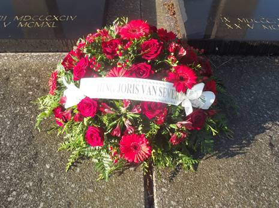
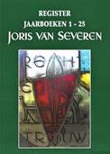
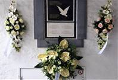
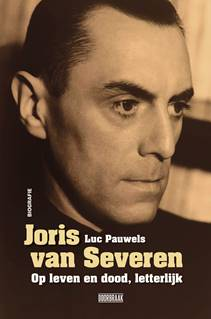
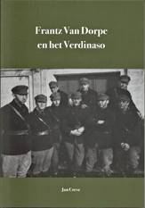

> nieuwsbrief > 2021- nr 3
Inhoud

Niettegenstaande de Covid-perikelen en -beperkingen
werd ook dit jaar
- dank zij
de Stichting Joris van Severen
het dubbelgraf te Abbeville op 20 mei met bloemen
getooid.
Ook aan het Cruyce van Bourgonje te Brugge werd op 22
mei in beperkt gezelschap een korte plechtigheid gehouden,
waarbij de gedenkplaat van de vier Brugse Abbeville-slachtoffers
-
waaronder Joris van Severen en Jan Ryckoort
met bloemen getooid werd.
Het Jaarboek 2021
werd ondertussen, samen met het Register aan de leden
toegestuurd. De nieuwe Joris van Severen-biografie volgt
einde augustus voor diegenen die het naast hu,
ledenbijdrage bestelden het zal door de Uitgeverij Doorbraak aan
de intekenaars toegestuurd worden.
Voor wie wel al de
ledenbijdrage vereffende, evenwel zonder in te tekenen op de
biografie (waarover verder méér) kan dit alsnog doen tot 31 juli
a.s. Daartoe kan het aanvullend bedrag (57 min het al betaalde
bedrag) overgeschreven worden op onderstaande rekening, met de
vermelding suppl. Biografie. Vereffening graag via onze
rekening IBAN: BE71 0001 7058 1469 BIC: BPOTBEB1 t.n.v.
Studiecentrum Joris van Severen, Paddevijverstraat 2, 8900
Ieper.
Naast de
uitgave van het 25e Jaarboek Joris van Severen plannen
we voor 2021 ook de uitgave van een uitgebreid Register
(120 paginas) van alle persoonsnamen die in de jaarboekenreeks
1 tot en met 25 terug te vinden zijn. Dit Register werd zonder
meerprijs - als bijlage bij het Jaarboek 25 (2021) aan alle
leden toegestuurd. Naderhand zullen we voor dit Register een
(nog te bepalen) kostprijs dienen aan te rekenen. Het is dus
zaak er tijdig bij te zijn, m.a.w. de ledenbijdrage zo spoedig
als mogelijk te vereffenen.
Nieuwe
biografie van Joris van Severen
Gepland werd om samen
met het Jaarboek Joris van Severen 25 ook de nieuwe
biografie Joris van Severen op leven en dood, letterlijk,
waarvan Luc Pauwels de auteur is, te kunnen
versturen. Het verschijnen bij Uitgeverij Doorbraak liep evenwel
enige vertraging op en is nu voorzien voor einde augustus
(zie hoger). In de boekhandel zal de prijs thans 39,99
i.p.v.35 bedragen.
U kan deze nieuwe
biografie via ons Studiecentrum bestellen in combinatie met het
Jaarboek Joris van Severen en het Register, aan
de ledenprijs van 57 voor het totale pakket. Ook hier geldt
evenwel de voorwaarde dat we uw intekening (en betaling) tijdig
kunnen registreren. Dit aanbod geldt tot uiterlijk 31 juli 2021.
Ten gevolge van het verlaat verschijnen van de biografie werd de
voorintekeningstermijn verlengd.
Herdenkingen 20 mei 1940 in Covid-tijden

De met bloemen
gesierde gedenksteen te Brugge op 22 mei 2021
Andermaal maakten de
Covid-perikelen en -maatregels zowel de traditionele herdenking
aan het Cruyce van Bourgonje te Brugge als het bezoek aan het
dubbelgraf van Joris van Severen te Abbeville onmogelijk.
Over wat wel kon leest u
onder de foto hogerop van deze Nieuwsbrief.
Joris van Severen krijgt nieuwe biografie
Joris
van Severen moet de Vlaamse politicus zijn die allicht het meest
tot de verbeelding spreekt. De notariszoon vocht aan het front
tijdens de Eerste Wereldoorlog, waar hij met de Vlaamsgezinde
Frontbeweging in contact kwam. Na de Groote Oorlog werd hij
Vlaams-nationaal volksvertegenwoordiger. Met de oprichting van
zijn Verdinaso en de Nieuwe Marsrichting draaide hij de
klassieke Vlaamse beweging de rug toe, wat hem applaus opleverde
in Franstalige en belgicistische kringen. Nog voor
nazi-Duitsland België bezette, stierf hij door een Franse kogel.
Doorbraak-medewerker en historicus Luc
Pauwels brengt in deze nieuwe biografie alle gekende
en minder gekende feiten samen, en staat ook
stil bij het privéleven van de Leider. De auteur is sinds 2020
ook voorzitter van het Studiecentrum Joris van Severen.
Oorspronkelijk
zou deze biografie al in de voorbije meimaand verschijnen, doch
al schrijvende is het boekwerk ver boven het oorspronkelijke
opzet uitgegroeid tot een omvangrijke prestigieuze gebonden
uitgave van niet minder dan 548 paginas, rijk geïllustreerd met
o.m. een kleurkatern. Het verschijnen wordt thans voor einde
augustus voorzien.
U
kunt deze biografie nog tot 31 juli verlengde
voorintekeningstermijn - bestellen in combinatie met het Jaarboek
Joris van Severen 25 (2021) en het Register over
de 25 verschenen Jaarboeken Joris van Severen. Zie de
gegevens daaromtrent hogerop in deze Nieuwsbrief.
Ten geleide bij het Jaarboek Joris
van Severen 25 (2021)
Maurits
Cailliau
Met deze aflevering
waren we aan het 25e Jaarboek Joris van
Severen toe. Een mijlpaal in de werking van het
Studiecentrum Joris van Severen, doch beslist nog geen eindpaal.
Uitschieters in de jaarboekenreeks waren ongetwijfeld Die
vervloekte oorlog, het integrale oorlogsdagboek van Joris
van Severen, naast de grote en uniek te noemen Fotobiografie.
Voldoende aanleiding vonden we om het thans al verrichte werk te
inventariseren middels de publicatie van een overzichtelijk Register
over de thans verschenen 25 jaarboeken, als annex bij deze
editie.
Ook dit 25e jaarboek
biedt weer behoorlijk wat nieuwe invalshoeken. We ordenden de
bijdragen ietwat chronologisch op basis van de aan bod komende
themas. Vooreerst leest u hoe Romain Vanlandschoot in De
laatste weg alleen terugblikt op Van Severens politieke
werkzaamheid in de periode tussen mei 1927 en mei 1929. Dit was
de periode waarin de beruchte Boms-verkiezing plaats vond, doch
in feite was hij toen de Rubicon al overgestoken en legde hij al
volop de ideële grondvesten van zn eigen beweging, het
Verdinaso.
In diezelfde periode
roerde er ook in Nederland allerhande op politiek vlak. In Er
moest wat nieuws komen bracht de Nederlandse historicus
Willem Huberts daarover recent verslag uit. Dat in dat bonte
wereldje van vernieuwings- of herstelbewegingen die zich door
het fascisme lieten inspireren ook het nationaalsolidarisme
gehoor vond, zal wel niemand verbazen. Docht dat in Nederland
een met name Verbond van Nationaal-Solidaristen werkzaam was
nog vooraleer Joris van Severen in het Noorden het Verdinaso
opstartte allicht wel. In Het Verbond voor
Nationaal-Solidaristen in Rijks-Nederland: de groep Sinclair
en de opbouw van het Verdinaso in Nederland (1931-1933) reconstrueert
Tom Cobbaert dit gebeuren dat tot nog toe veelal tussen
de plooien van de geschiedenis inviel en opgevolgd werd door de
moeizame opstart van de Nederlands tak van het Verdinaso.
Met de daaropvolgende
bijdrage van Ruud Bruijns blijven we binnen de
Noord-Nederlandse tak van het Verdinaso. Ook daar bleken wel
vaker broederparen geïnspireerd te worden door de ideeën die het
Verdinaso uitdroeg. Voor Vlaanderen stonden daarvoor de vier
gebroeders Morael model. In Nederland geldt dit voor de
gebroeders Stolte. Met De gebroeders Stolte en het Verdinaso
schetst de auteur hun taak en verdiensten voor het
Verdinaso en tevens ook hun maatschappelijke opgang.
Aansluitend
op wat Ruud Bruijns eerder over het Verdinaso in de Romaanse
gouwen publiceerde verdiepte Jan Creve zich in Jacques
Boseret en de Waalse Dinasos in de levensloop en in de
belangrijke rol die deze Luikenaar gespeeld heeft in de uitbouw
van het Verdinaso beneden de taalgrens. Dat ook na het
verdwijnen van het Verdinaso in 1941 de ideeën van Joris van
Severen aldaar blijvend gepromoot werden is evenzeer zijn
verdienste.
Luc
Pauwels buigt zich andermaal over het containerbegrip
fascisme. In Winston Churchill en
Joris van Severen waren geen fascisten verwijst hij naar de Britse premier tijdens de Tweede
Wereldoorlog, die zich een decennium eerder best kon vinden met
de inzichten van Benito Mussolini, waarvan een Joris van Severen
al eerder afstand genomen had. Verderop ontrafelt de auteur hoe
het fascismebegrip dermate kon devalueren tot een meid voor
alle werk bij het diaboliseren van politieke tegenstanders.
Afsluiten
doen we met de Kleine ballade voor Joris van Severen van
T. de Graaf dat opgenomen werd in het
tijdschrift Aristo (nr. 3, jg. 1947) van Wouter Lutkie.
De auteur konden we helaas niet met stellige zekerheid traceren,
wel wie hij vermoedelijk was.
___________________
N.a.v. het 25e
Jaarboek Joris van Severen (2015). Gen. 208 p., ill.,
ledenprijs 25 , boekhandelsprijs 35 . ISBN 9789076057248.
Correctie
Op blz. 79 van dit
nieuwe Jaarboek sloop een fout in het onderschrift bij de tweede
foto. De persoon (met bril) die naast Van der Horst zit is niet
Pol van Herzeele maar Pol le Roy (op p.161 staat Van Herzeele
vrij duidelijk afgebeeld).
Frantz van Dorpe en het Verdinaso
Luc
Pauwels
De succesvolle ondernemer Frantz van Dorpe (1906-1990)
was in de jaren 1930 een van de kopstukken van de beweging van
Joris van Severen, het Verbond van Dietse
Nationaal-Solidaristen (Verdinaso). Tijdens de oorlog
stond hij in het verzet tegen de Duitse bezetter. En van 1965
tot 1976 was hij CVP-burgemeester van de stad Sint-Niklaas.
Voldoende stof voor een boeiende biografie, vond historicus Jan
Creve.